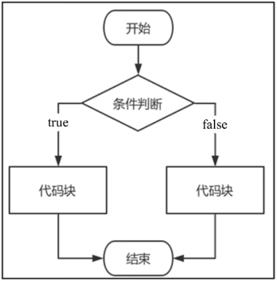

首页 > 编程笔记
Go语言if else语句的用法
在Go语言中，条件判断是由 if else 语句实现的，根据条件的判断结果（true 或 false）来执行相应的代码块。如图1所示是 if else 语句的执行过程。
从图1中可大致了解 if else 语句的具体执行过程，简单来说，if 语句判断某个变量是否符合条件，如果符合就执行相应的代码块，如果不符合就执行另一个代码块。
if 语句的语法格式如下：
程序在执行的时候，首先分析“判断条件1”是否为 true，若为 true，则执行“执行语句1”的代码块，否则往下执行，程序继续分析“判断条件2”是否为 true，若为 true，则执行“执行语句2”的代码块，否则继续往下执行，以此类推。
如果所有条件判断不成立，程序最后就会执行 else 语句的“执行语句N”代码。
比如使用 if 语句实现简单的体重评测，代码如下：
判断条件的变量还可以在 if 语句中定义，变量只能在 if 语句中使用，如果在 if 语句之外使用，则视为未定义变量，换句话说，在 if 语句中定义的变量，变量作用域只适用于 if 语句，示例如下：
if else 嵌套是把 if…else if…else 语句放在另一个 if…else if…else 语句的代码里面，语法格式如下：
在一个程序中，if 语句嵌套得越多，程序的路径数量就越多，不仅会使代码冗余，而且业务逻辑更加臃肿复杂，对测试人员和功能的维护存在一定难度。

图1：Golang if else 语句的执行过程
图1：Golang if else 语句的执行过程
从图1中可大致了解 if else 语句的具体执行过程，简单来说，if 语句判断某个变量是否符合条件，如果符合就执行相应的代码块，如果不符合就执行另一个代码块。
if 语句的语法格式如下：
if 判断条件1 {
执行语句1
}else if 判断条件2 {
执行语句2
...
...
}else {
执行语句N
}
if 语句的语法格式说明如下：
-
每个判断条件后面必须加上中括号
{}，中括号里面编写符合条件所执行的功能代码。 - 在 if 语句中，只有一个 if 和 else 关键字，但允许有多个 else if 判断条件，语句出现的顺序必须为 if→else if→else。
- 一个简单的 if 语句可以只有一个 if 关键字，else if 和 else 可以省略。
程序在执行的时候，首先分析“判断条件1”是否为 true，若为 true，则执行“执行语句1”的代码块，否则往下执行，程序继续分析“判断条件2”是否为 true，若为 true，则执行“执行语句2”的代码块，否则继续往下执行，以此类推。
如果所有条件判断不成立，程序最后就会执行 else 语句的“执行语句N”代码。
比如使用 if 语句实现简单的体重评测，代码如下：
package main
import "fmt"
func main() {
var weight int
fmt.Printf("输入你的体重（kg）：")
fmt.Scan(&weight)
fmt.Printf("\n")
if weight < 40 {
fmt.Printf("体重值为%v，偏轻\n", weight)
}else if 40 <= weight && weight <= 70{
fmt.Printf("体重值为%v，正常\n", weight)
}else {
fmt.Printf("体重值为%v，偏重\n", weight)
}
}
上述代码分别运行3次，依次输入数值 30、50 和 80，程序会依次输出体重偏轻、体重正常和体重偏重。判断条件的变量还可以在 if 语句中定义，变量只能在 if 语句中使用，如果在 if 语句之外使用，则视为未定义变量，换句话说，在 if 语句中定义的变量，变量作用域只适用于 if 语句，示例如下：
package main
import (
"fmt"
"math/rand"
"time"
)
func main() {
// 随机数
rand.Seed(time.Now().Unix())
// num := rand.Intn(100)从100中随机生成整数
if num := rand.Intn(100); num < 20 {
fmt.Printf("随机数为%v\n", num)
}else if num > 20{
fmt.Printf("随机数为%v\n", num)
}
}
在 if 语句中定义变量能节省内存开支，因为变量只作用在 if 语句中，当 if 语句执行完毕后，Go语言会自动释放变量的内存地址，从而节省计算机的资源开支。
if else 的多层嵌套
一个 if else 语句还可以嵌套多个 if else 语句，只要在某个条件的代码中嵌套一个或多个 if 语句就能实现复杂的逻辑判断。if else 嵌套是把 if…else if…else 语句放在另一个 if…else if…else 语句的代码里面，语法格式如下：
if 判断条件1 {
if 判断条件一 {
执行语句一
}else if 判断条件二 {
执行语句二
}else {
执行语句三
}
}else if 判断条件2 {
if 判断条件四 {
执行语句四
}else if 判断条件五 {
执行语句五
}else {
执行语句六
}
}else {
执行语句N
}
如果将体重评测加入年龄限制，在评测体重之前应先判断年龄大小，使体重评测更加准确，实现代码如下：
package main
import "fmt"
func main() {
var weight, age int
fmt.Printf("输入你的年龄：")
fmt.Scan(&age)
fmt.Printf("\n")
fmt.Printf("输入你的体重（kg）：")
fmt.Scan(&weight)
fmt.Printf("\n")
if age < 10 {
fmt.Printf("你的年龄为%v\n", age)
if weight < 15 {
fmt.Printf("体重值为%v，偏轻\n", weight)
}else if weight >= 15 && weight < 30 {
fmt.Printf("体重值为%v，正常\n", weight)
}else{
fmt.Printf("体重值为%v，偏重\n", weight)
}
}else if 15 <= age && age <= 30{
fmt.Printf("你的年龄为%v\n", age)
if weight < 40 {
fmt.Printf("体重值为%v，偏轻\n", weight)
}else if weight >= 40 && weight < 60 {
fmt.Printf("体重值为%v，正常\n", weight)
}else{
fmt.Printf("体重值为%v，偏重\n", weight)
}
}else {
fmt.Printf("你的年龄为%v\n", age)
if weight < 60 {
fmt.Printf("体重值为%v，偏轻\n", weight)
}else if weight >= 60 && weight < 80 {
fmt.Printf("体重值为%v，正常\n", weight)
}else{
fmt.Printf("体重值为%v，偏重\n", weight)
}
}
}
从上述代码看到，最外层的 if 语句设置了3个条件判断，每个条件判断的代码再设置了3个条件判断，因此程序的路径数量为 3×3=9，也就说在程序中输入体重和年龄后，程序根据数值大小会出现9种不同的输出结果。在一个程序中，if 语句嵌套得越多，程序的路径数量就越多，不仅会使代码冗余，而且业务逻辑更加臃肿复杂，对测试人员和功能的维护存在一定难度。
关注公众号「站长严长生」，在手机上阅读所有教程，随时随地都能学习。内含一款搜索神器，免费下载全网书籍和视频。

微信扫码关注公众号